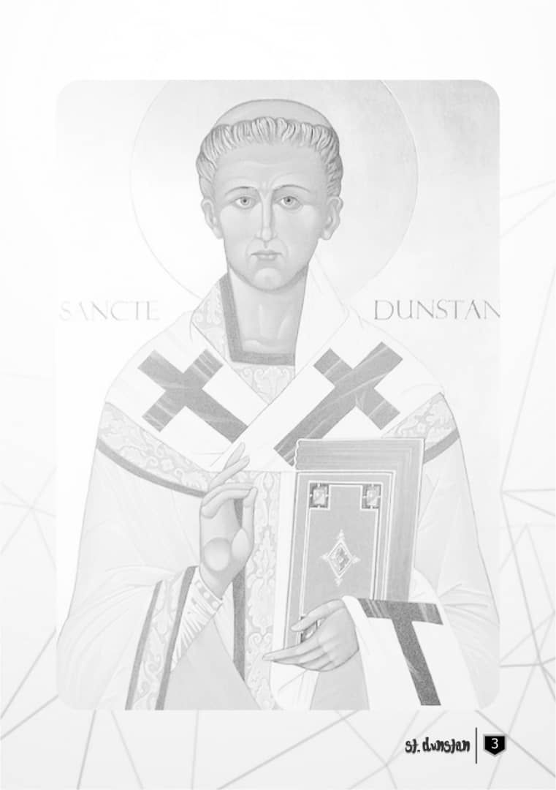

A Biography
Dunstan was born in the village of Baltonsborough, Somerset, just a few miles south of Glastonbury, probably about the year 909 or 910. [Note: the Anglo-Saxon Chronicle gives the birth date as 925]. His father Heorstan was a Wessex nobleman of royal blood, and his family connections were to be of great benefit to him in his later career in the church. Glastonbury was at that time a popular place for Christian pilgrimage; folk traditions told that it was the first place of Christian settlement in Britain, and associated it with Joseph of Arimathea and Jesus himself.